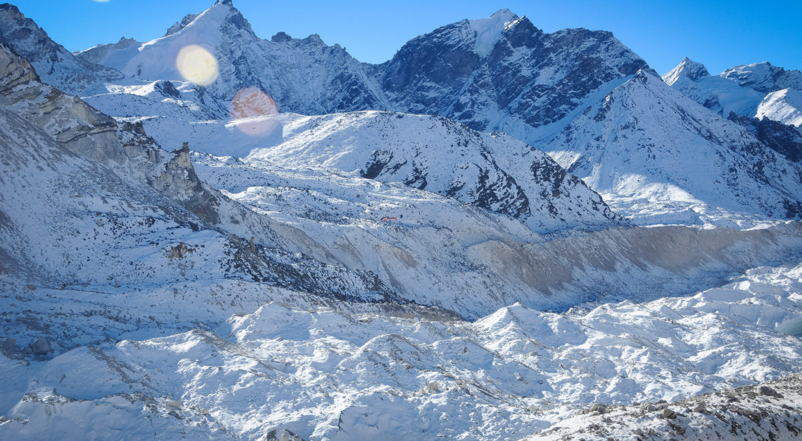
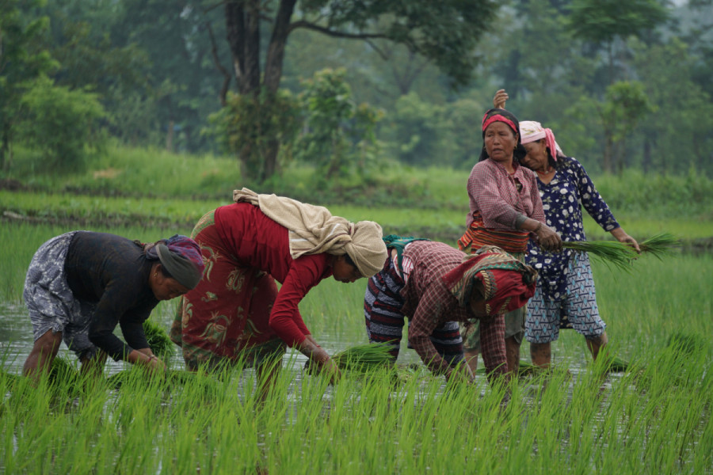
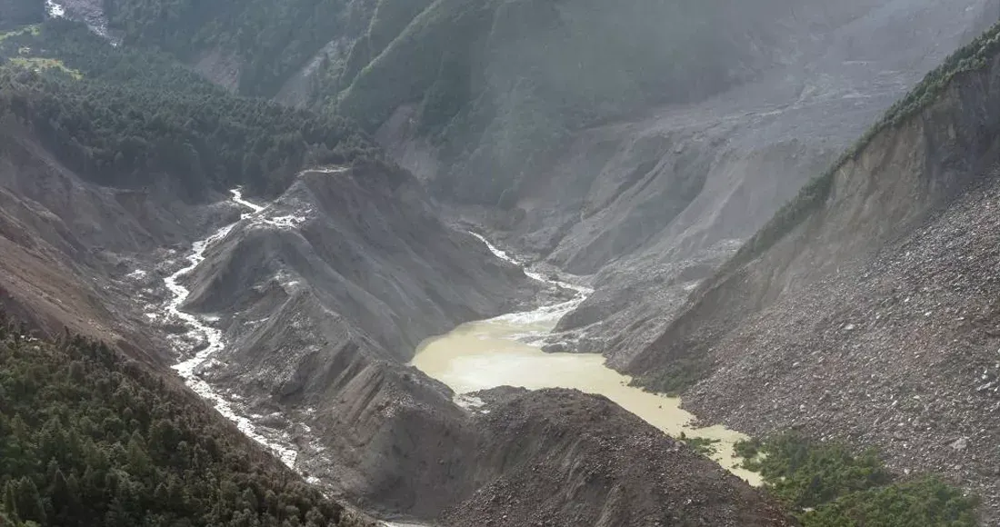

CLIMATE CHANGE IN NEPAL
Climate Change in Nepal
Climate change is affecting Nepal in many ways. It is changing our mountains, farms, rivers and weather.
NEPAL AND CLIMATE CHANGE
What is Happening in Nepal?
Nepal has mountains, hills, forests, rivers and plains. Climate change is affecting all these areas in different ways.


Melting Glaciers
The glaciers in the Himalayas are melting because temperatures are getting warmer.
Farming
Changes in rainfall and temperature can make it harder for farmers to grow crops.
Floods and Landslides
Heavy rain can cause floods and landslides. They can damage homes, roads and farms.
Water
Changes in rainfall and melting snow can affect the amount of water available to people and animals.
OUR FUTURE
Protecting Nepal
We can help Nepal by protecting forests, saving water and reducing pollution.